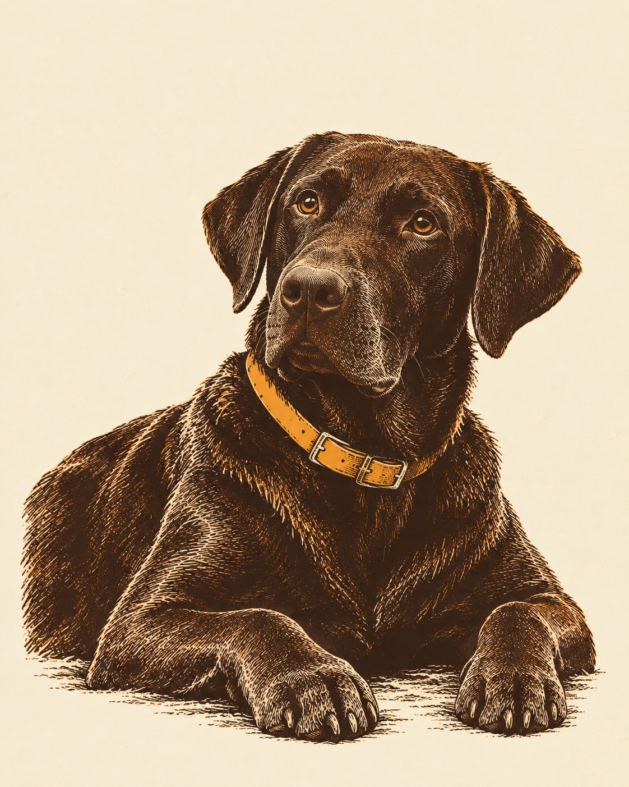

Thursday's ChoiceFor the weekend of Sat 17 – Sun 18 October
New Hope Overlook and the Shorter Lakeside Loop
A 2.7-mile blue-blazed loop through the woods at Jordan Lake: a local counterpoint to Tuesday’s mountain day, with a return before the longer red circuit.
· Weekend choice 2 of 2

Why This Week
Keep this one close to home and let the woodland walk set the pace. The blue loop offers a moderate outing without committing to New Hope’s full 5.4-mile red circuit. Thursday’s NWS outlook favors a dry Sunday window over a gusty, showery Saturday. Take Rupert on his six-foot leash, carry water, and enjoy the lake from the trail rather than making this a swimming stop.
Conditions
Saturday: A chance of rain showers. Partly sunny, with a high near 63. North wind 12 to 15 mph, with gusts as high as 26 mph. Chance of precipitation is 40%. New rainfall amounts between a tenth and quarter of an inch possible. Sunday: A slight chance of rain showers. Mostly sunny, with a high near 61. Saturday night: A chance of rain showers. Partly cloudy, with a low around 44. Chance of precipitation is 30%. New rainfall amounts between a tenth and quarter of an inch possible. Sunday night: A slight chance of rain showers before 2am. Partly cloudy, with a low around 45.
If it turns
Thunder, unsafe wind, flooding, official closure or a tired dog: Postpone or turn back. Another outdoor trail is not a thunderstorm fallback. Recheck official access and the current NWS forecast before leaving.
Forecast snapshot · issued Thu 15 Oct, 06:53 ET · National Weather Service — current point forecast
For Rupert
Carry drinking water, take sniffing breaks and keep the attended leash no longer than six feet. The blue loop is 2.7 miles; turn back early if the footing or his pace calls for it.
Watch the Wind
Saturday’s forecast includes showers and gusts to 26 mph. Favor a dry, calmer Sunday window; postpone for thunder, strong wind, flooding or closure. This is a trail outing, not a dog-swim stop.
If Plans Change
- CloserA shorter New Hope out-and-back30–40 min drive
- Bigger dayThe full New Hope red circuit5.4 mi · 30–40 min drive
- AlternativeA quiet picnic after the walk30–40 min drive
Memory Prompt
What catches his attention when you slow down? Remember it from a safe, level place on the marked trail.
Sources
- NC State Parks — current access, hours and pet rules retrieved 2026-10-15
- NC State Parks — official trail listing retrieved 2026-10-15
- NC State Parks — official access map retrieved 2026-10-15
- National Weather Service — current point forecast snapshot retrieved 2026-10-15 · link shows the current forecast
Place details as recorded Thu 15 Oct. They stay as published even if the place's record is corrected later.